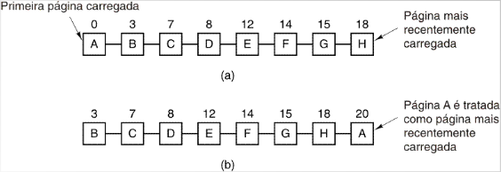
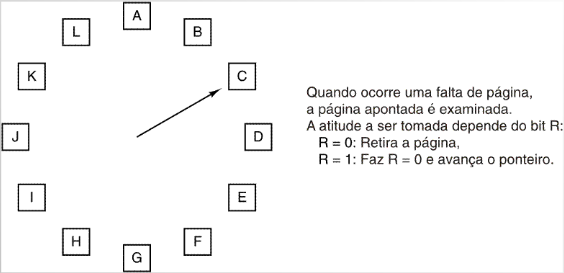
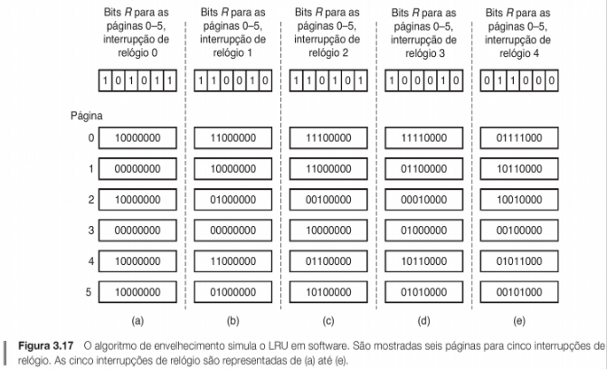
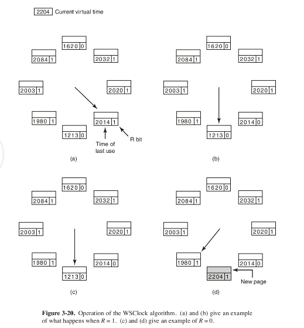
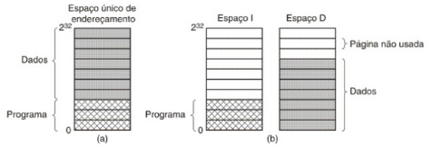
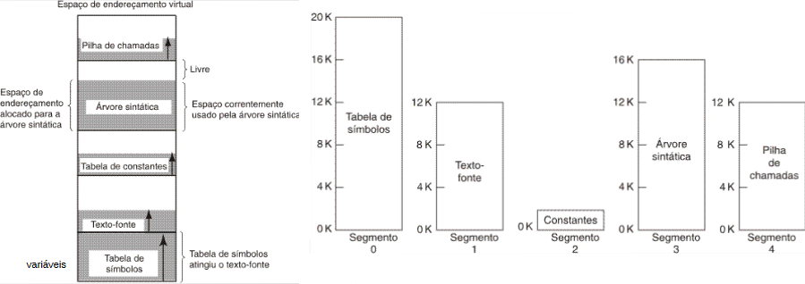

😪 RESUMO DO RESUMO 😎
- Na forma mais simples de memória virtual, cada espaço de endereçamento de um processo é dividido em páginas de tamanho uniforme.
- Dois dos melhores algoritmos de substituição de páginas são o Envelhecimento (aging) e o WSClock.
- No projeto de sistemas de paginação, a escolha de um algoritmo não é suficiente, precisamos considerar: alocação e tamanho de página.
- Segmentação ajuda a lidar com estruturas de dados que mudam de tamanho durante a execução, simplifica o compartilhamento e permite proteção diferente para segmentos diferentes.
- Segmentação e paginação podem ser combinados para fornecer uma memória virtual de duas dimensões.
🥵 Resumo não resumido 🥵
Substituição de páginas
A paginação foi inventada para fornecer um grande espaço de endereçamento linear sem a necessidade
de comprar mais memória física.
- Falta de página (page-fault) na memória.
- A página modificada deve primeiro ser salva (se não foi modificada é apenas sobreposta).
- Melhor não escolher uma página que está sendo muito usada.
Algoritmos de substituição de páginas
Ótimo: procura substituir o mais tarde possível - impraticável.
Algoritmos existentes:
- First-In, First-Out (FIFO).
- Not Recently Used (NRU).
- Segunda chance (SC).
- Least Recently Used (LRU).
- Conjunto de trabalho (Working Set - WS).
- Relógio (Clock).
- WSClock.
Não Usada Recentemente (NUR/NRU)
- Cada página tem os bits Referenciada (R) e Modificada (M).
- Bits são colocados em 1 quando a página é referenciada e modificada.
- Bit R é limpo peridiodicamente.
- As páginas são classificadas: referenciada ou não / modificada ou não.
- NUR remove página aleatoriamente da classe de ordem mais baixa que não esteja vazia.
Primeira a Entrar, Primeira a Sair (FIFO)
- Mantém uma lista encadeada de todas as páginas.
- Na ocorrência de falta de página: a mais antiga é removida (a cabeça da lista)
- Desvantagem: a mais antiga pode ser usada com muita frequência.
Segunda chance (SC)

Operação do algoritmo segunda chance:
- lista de páginas em ordem FIFO
- estado da lista em situação de falta de página no instante 20, com o bit R da página A em 1 (o bit é modificado para 0).
Relógio

Otimização simples do algoritmo Segunda Chance.
Menos Recentemente Usada (MRU/LRU)
- Considera que páginas usadas recentemente logo serão usadas novamente.
Retira da memória a página que há mais tempo não é usada.
- Idealmente, usa hardware especial.
- Contador especial incrementado a cada instrução.
- Ou uma matriz NxN, onde N é o número de páginas na memória.
LRU em Software
- NFU (Not Frequently Used): cada página tem um contador (software) incrementado com R quando é usada.
- Envelhecimento (Aging): a cada interrupção de relógio desloca o contador para a direita e coloca o valor
de R no bit mais significativo.

WSClock

Acessa a tabela de páginas de forma circular e já remove a primeira página que satisfaz a condição de remoção.
Se não houver nenhuma página ideal, pega a página que foi acessada há mais tempo.
Ótimo: Impraticável; escolhe exatamente a melhor página a ser removida, sempre seleciona a página que não será usada por mais tempo.
Controle de carga
- Sistema ainda pode sofrer paginação excessiva (thrashing)
- Quando alguns processos precisam de mais memória, mas nenhum outro precisa de menos.
- Solução: reduzir o número de processos na memória. Levar para disco, reconsiderar grau de multiprogramação.
Tamanho de página
Tamanho de página pequeno:
Vantagens:
- menos fragmentação interna
- menos partes não usadas de programas na memória
Desvantagens:
- programas precisam de mais páginas, tabelas de página maiores
- mais acessos a disco
Espaços separados de instruções e dados

Duplica o espaço de endereçamento, permite otimizações na paginação.
Páginas compartilhadas
Dois processos que compartilham as mesmas instruções e, por consequência, a mesma tabela de páginas para instruções.
Envolvimento do S.O. com paginação
- Criação de processo
- determina tamanho do programa
- cria tabela de página
- cria área de troca (swap area)
- Execução de processo
- inicia MMU para novos processos
- limpa a TLB
- Ocorrência de falta de página
- determina endereço virtual que causou a falta
- escolhe e descarta, se necessário, uma página antiga
- carrega página requisitada para a memória (swap)
- Terminação de processo
- Libera tabela de páginas, páginas e espaço em disco que as páginas ocupam.
Lidando com uma falta de página
- Hardware desvia (trap) a execução para o núcleo, salvando o PC na pilha.
- S.O. determina página virtual requerida e escalona remoção de uma página da memória
- Se a página foi modificada, escreve para o disco
- Quando a moldura está liberada, o SO captura a página requerida no endereço definido no disco
- Quando a interrupção de disco indica que a página chegou, as tabelas de página são atualizadas
- PC aponta para a instrução que provocou a falta
- Demais registradores e outras informações do processo interrompido são carregados
- Retorna para o espaço de usuário para continuar a execução, como se nenhuma falta tivesse ocorrido
Fixação de páginas na memória
Fixação de páginas envolvidas com E/S na memória para evitar problemas.
Memória secundária
- Podemos manter na área de troca todos os espaços de endereçamento das páginas do processo, inclusive as que
estão na memória principal (Memória RAM).
- Vantagem: Mapeamento mais simples.
- Desvantagem: Ocupa mais espaço no disco.
- Podemos manter na área de troca apenas os espaços de endereçamento das páginas do processo que não estão na
memória principal.
- Vantagem: Menos espaço ocupado em disco.
- Desvantagem: Mapeamento mais complexo, pois além da tabela de páginas é necessário um mapa de disco.
- Qual é a melhor estratégia depende do que é mais crítico no momento.
Segmentação

Técnica inventada para permitir que programas e dados sejam quebrados em espaços de endereçamento logicamente independentes e para auxiliar o compartilhamento e a proteção.
- Compartilhamento de espaço de endereçamento.
- Cada processo possui o seu espaço de endereçamento, porém possui um segmento compartilhado.
- Um segmento é um espaço da memória que mais de um processo pode ter acesso.
- Não é muito utilizada, pois tem um complicador: o gerenciamento deve ser feito pelo programador, não
pelo SO, aumentando a complexidade.
- GDT - Global Descriptor Table: Única para todo o sistema; tabela do SO onde cada entrada informa os dados
de um segmento, informações sobre todos os segmentos que o SO pode ter.
- LDT - Local Descriptor Table: Uma para cada processo; informa quantos segmentos um processo pode ter acesso.